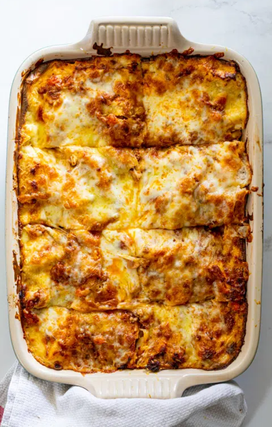

Layers of pasta with from-scratch Bechamel sauce, Bolognese and cheese makes this homemade lasagna the ultimate comfort food.
This is closer to a classic Italian lasagna recipe than the American version made with ricotta cheese or Italian sausage. I love making my own homemade sauce and layering it with fresh béchamel sauce, pasta sheets and cheese for the best lasagna recipe.
In a large pot or Dutch oven, heat a few tablespoons of olive oil. Add the meat in batches and brown well. Remove from the pot and set aside. In the same pot, add the onion, carrot, celery and fresh herbs. Cook for 10 minutes, stirring occassionally, until they are golden brown and starting to soften. Add the garlic and cook for another 30 seconds. Add the meat back into the pot with the stock, tomatoes, sugar, salt and pepper. Partially cover with a lid and reduce the heat. Allow to simmer for 45-60 minutes, stirring occassionally, until the sauce is rich and slightly reduced. While the bolognese cooks, make the bechamel sauce according to recipe instructions. To assemble the lasagna add a few spoons of bolognese sauce into the bottom of a deep casserole dish then add a layer of lasagna sheets. Add a few more spoons of bolognese then layer with the remaining lasagna sheets, bechamel sauce and grated cheese. Finishing with a layer of bechamel and cheese. Cover the lasagna loosely with foil and place in a preheated oven (180°C/350°F). Bake for 30-45 minutes until a knife can easily be inserted. Remove the foil and allow to bake for another 10 minutes to brown the top. Remove the lasagna from the oven and allow to rest for at least 15 minutes. Slice and serve.